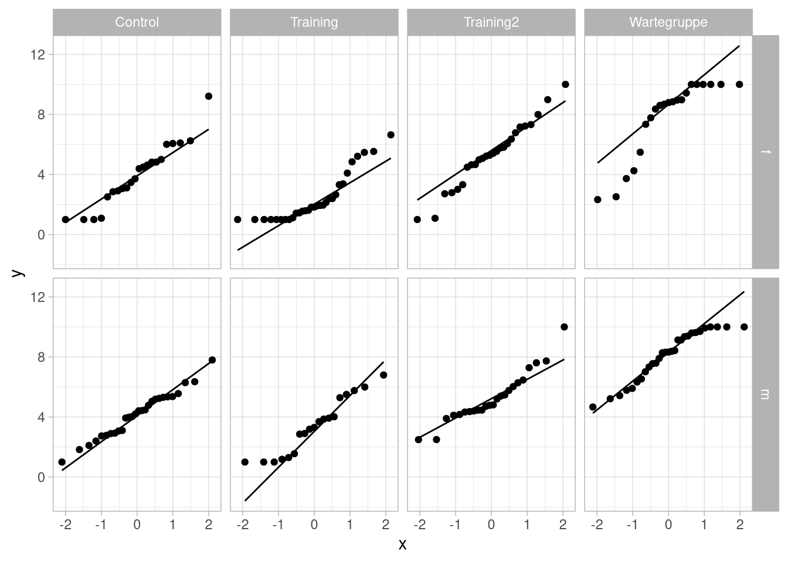
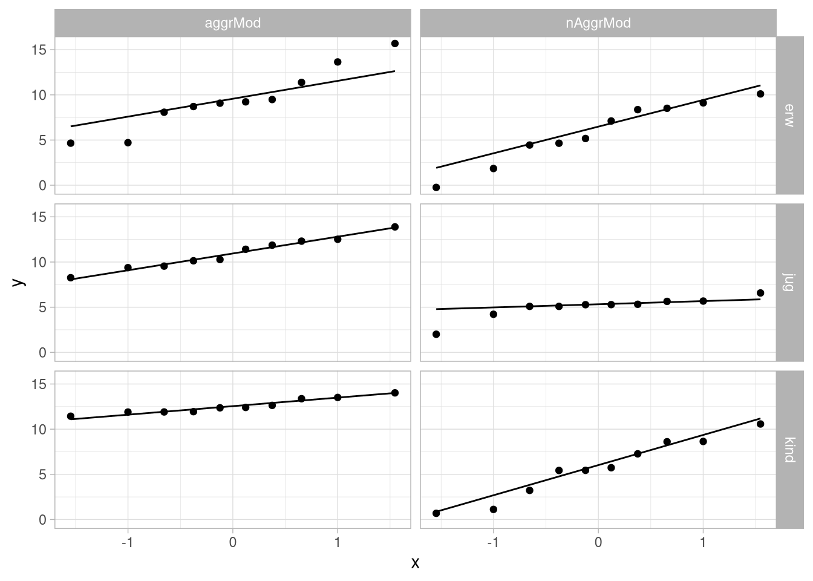

Gruppenunterschiede II
Organisatorisches
Semesterplan
| Einheit | Vorlesung | Übungswoche | Thema |
|---|---|---|---|
| 1 | 23.04.21 | keine Übung | Deskriptive Statistik |
| Data Cleaning | |||
| 2 | 07.05.21 | KW 19 | Hilfsmittel für die Inferenzstatistik |
| Lineare Regression I | |||
| 3 | 21.05.21 | KW 21 | Lineare Regression II |
| 4 | 04.06.21 | KW 23 | t- Tests |
| einfaktorielle Varianzanalyse | |||
| 5 | 18.06.21 | KW 25 | zweifaktorielle Varianzanalyse |
| 6 | 02.07.21 | KW 27 | Kontrasttests |
Datensatz
Wir verwenden den (leicht erweiterten), simulierten Datensatz aus den letzten Wochen:
| Variable | Inhalt |
|---|---|
vp_nr
|
VP-Nummer |
group
|
Treatment-Gruppe |
sex
|
Geschlecht |
hawie_iq
|
Intelligenz-Quotient aus HAWIE |
hawie_wahr_log
|
Skalenwert wahrnehmungsgebundenes logisches Denken aus HAWIE |
pre_skill
|
motorischer Skill vor dem Treatment |
peri_skill
|
motorischer Skill während des Treatments |
post_skill
|
motorischer Skill nach dem Treatment |
substance
|
Substanzgabe vor der jeweiligen Testung |
Varianzanalyse - ein abhängiger Faktor
ein abhängiger Faktor
Die einfaktorielle Varianzanalyse mit abhängigen Gruppen dient dazu, Mittelwerte zu vergleichen, die aus einer Reihe von Beobachtungen stammen, bei denen statistische Abhängigkeit angenommen werden muss. Das ist zum Beispiel bei einem Design mit wiederholten Messungen in jeweils ein und derselben Versuchsperson der Fall.
Wenn die Variablen normalverteilt, die wiederholten Messungen untereinander (zwischen den Versuchspersonen) unabhängig sind und Sphärizität gegeben ist, ist die Teststatistik im Falle der Gültigkeit der \(\text{H}_0: {\mu}_1 = {\mu}_2 \ldots = {\mu}_k\) \(F_{k-1,(k-1)(N-1)}\)-verteilt.
Für die Durchführung der Varianzanalyse mit abhängigen Gruppen mit ezANOVA() muss
- der Datensatz im LONG-Format vorliegen (zumindest muss die AV über alle Messzeitpunkte in einer Variable abgelegt sein)
- Ein Blockbildungsfaktor, also eine Kennzeichnung des Messzeitpunktes vorliegen
- wie vorher auch eine Variable, die die Versuchsperson codiert, vorliegen.
Im Folgenden wird der Blockbildungsfaktor
Der aus dem unabhängigen Fall bekannte Funktionsaufruf muss nur so geändert werden, dass statt des vorher mit dem between-Argument angegebenen unabhängigen Faktors mit dem within-Argument der abhängige oder Blockbildungsfaktor angegeben wird.
ezANOVA(data = <data>,
dv = <AV>,
wid = <VP-Code>,
within = <Block>)In unserem Beispiel-Datensatz sieht das so aus:
library(ez)
anova_time <-
df_wide %>%
pivot_longer(cols = contains('skill'),
names_to = 'time',
values_to = 'skill') %>%
ezANOVA(dv = skill,
wid = vp_nr,
within = time)Das Ganze führt dann zu dem folgenden Ergebnis:
anova_time## $ANOVA
## Effect DFn DFd F p p<.05 ges
## 2 time 2 398 4.329244 0.01380361 * 0.01245873
##
## $`Mauchly's Test for Sphericity`
## Effect W p p<.05
## 2 time 0.8678891 8.090194e-07 *
##
## $`Sphericity Corrections`
## Effect GGe p[GG] p[GG]<.05 HFe
## 2 time 0.8833057 0.01757486 * 0.8906258
## p[HF] p[HF]<.05
## 2 0.0173103 *Der Output besteht aus den Ergebnistabellen für zwei inferenzstatistische Tests und einer Ergebnistabelle für die Testergebnisse nach Sphärizitäts-Korrektur. Als Erstes ist da das Ergebnis eines Mauchly-Tests (ein Test auf Sphärizität):
anova_time$`Mauchly's Test for Sphericity`| Effect | W | p | p<.05 |
|---|---|---|---|
| time | 0.868 | 8.09e-07 | * |
Mit
- Angaben zu dem/n Faktor(en) für den/die Sphärizität überprüft wurde
- der entsprechenden Teststatistik
- dem entsprechenden p-Wert und einer Signifikanzaussage
Zum Anderen dem Ergebnis der eigentlichen Varianzanalyse:
anova_time$`ANOVA`| Effect | DFn | DFd | F | p | p<.05 | ges |
|---|---|---|---|---|---|---|
| time | 2 | 398 | 4.33 | 0.0138 | * | 0.0125 |
Mit
- einer Angabe des Effekts, für den die Ergebnisse berichtet werden
- Zähler- und Nennerfreiheitsgraden
- den entsprechenden Quadratsummen
- dem F-Wert
- dem entsprechenden p-Wert und einer Signifikanzaussage
- einem Schätzer für die Effektstärke \(\eta^2\)
Und zu guter Letzt mit dem Ergebnis der Varianzanalyse nach Greenhouse-Geisser und Hyunh-Feldt-Korrektur
anova_time$`Sphericity Corrections`| Effect | GGe | p[GG] | p[GG]<.05 | HFe | p[HF] | p[HF]<.05 |
|---|---|---|---|---|---|---|
| time | 0.883 | 0.0176 | * | 0.891 | 0.0173 | * |
Mit
- Einer Angabe des Effekts, für den die Ergebnisse berichtet werden
- dem \(\epsilon\) nach Greenhouse-Geisser
- dem entsprechenden p-Wert und einer Signifikanzaussage
- dem \(\epsilon\) nach Hyunh-Feldt
- dem entsprechenden p-Wert und einer Signifikanzaussage
Aufgabe
## $ANOVA
## Effect DFn DFd F p p<.05 ges
## 2 time 2 398 4.329244 0.01380361 * 0.01245873
##
## $`Mauchly's Test for Sphericity`
## Effect W p p<.05
## 2 time 0.8678891 8.090194e-07 *
##
## $`Sphericity Corrections`
## Effect GGe p[GG] p[GG]<.05 HFe
## 2 time 0.8833057 0.01757486 * 0.8906258
## p[HF] p[HF]<.05
## 2 0.0173103 *Wie interpretieren wir das Ergebnis?
Es gibt keinen Unterschied.
Da Sphärizität nicht gegeben ist, ist das Ergebnis nicht zu interpretieren.
Mit Berücksichtigung des mit Sphärizitäts-Korrektur nach Huynh-Feldt signifikant gewordenen Tests nehmen wir unsere \(\text{H}_1\) an, also dass sich die Skillwerte zu den Testzeitpunkten unterscheiden, es also einen Effekt der Treatments gab.
Da wir die Normalverteiltheit der Variablen nicht überprüft haben, können wir keine Aussage machen.
Antwort
ist falsch, da Interpretation der \(H_0\)
ist falsch, zwar ist die Voraussetzung der Sphärizität nicht gegeben, da wir aber dafür korrigieren ist dieser Umstand zu vernachlässigen.
kann man so sagen
Stimmt nicht ganz, aus Robustheits-Gründen wird das Ergebnis in der Regel schon valide sein.
Varianzanalyse - zwei unabhängige Faktoren
Zwei unabhängige Faktoren
Das Modell der zweifaktoriellen Varianzanalyse erlaubt es, drei Effekte zu testen: den Haupteffekt der ersten sowie der zweiten UV und den Interaktionseffekt.
Statistische \(H_0\)en:
\(\begin{array}{l l c l c l c l} \text{H}_{0A}: & \mu_{1\cdot} & = & \mu_{2\cdot} & = & \cdots & = & \mu_{J\cdot} \\ \text{H}_{0B}: & \mu_{\cdot 1} & = & \mu_{\cdot 2} & = & \cdots & = & \mu_{\cdot K} \\ \text{H}_{0I}: & \forall {\mu}_{jk} & \text{ gilt}: &{\mu}_{jk} & = & {\mu}_{j\cdot}& + {\mu}_{\cdot k} -& \mu \end{array}\)
Die \(H_1\) ist dann entsprechend immer “nicht \(H_0\).”
Die Auswertung funktioniert dann ganz ähnlich zum einfaktoriellen Fall, wir müssen nur den zusätzlichen between-Faktor angeben. Dabei wird vom ez-Paket die folgende etwas ungewöhnliche Syntax zur Verkettung der Faktoren eingeführt:
ezANOVA(data = <data>,
dv = <AV>,
wid = <VP-Code>,
between = .(<UV1>,<UV2>))Das .() ist eine extra für diesen Zweck eingeführte Liste
Wenn man sich an die ungewöhnliche Notation gewöhnt hat, ist die Anwendung aber ganz leicht:
library(ez)
anova_groupXsex <-
df_wide %>%
ezANOVA(dv = post_skill,
wid = vp_nr,
between = .(group,sex))Der Output ist dann auch nicht weiter überraschend, wir bekommen wieder eine Ergebnistabelle für die ANOVA und eine für den Levene-Test. Die Tabelle für die ANOVA ist jetzt aber natürlich etwas länger1.
anova_groupXsex$ANOVA| Effect | DFn | DFd | F | p | p<.05 | ges |
|---|---|---|---|---|---|---|
| group | 3 | 192 | 66.5 | 1.6e-29 | * | 0.509 |
| sex | 1 | 192 | 1.59 | 0.209 | 0.0082 | |
| group:sex | 3 | 192 | 0.659 | 0.578 | 0.0102 |
Aufgabe
anova_groupXsex## $ANOVA
## Effect DFn DFd F p p<.05
## 1 group 3 192 66.471321 1.602553e-29 *
## 2 sex 1 192 1.586832 2.093085e-01
## 3 group:sex 3 192 0.658699 5.784263e-01
## ges
## 1 0.509470743
## 2 0.008197002
## 3 0.010187322
##
## $`Levene's Test for Homogeneity of Variance`
## DFn DFd SSn SSd F p p<.05
## 1 7 192 9.348968 317.8641 0.8067247 0.5826385Wie interpretieren wir das Ergebnis?
Da der Levene-Test nicht signifikant geworden ist können wir keine Varianzhomogenität annehmen. Deswegen können wir die Ergebnisse nicht interpretieren.
Nicht alle Effekte sind signifikant geworden, deswegen können wir nichts interpretieren.
Da der Test des Haupteffekts der Gruppe signifikant geworden ist, entscheiden wir uns dazu anzunehmen, dass die unterschiedlichen Interventionen zu unterschiedlichen Skillwerten führen.
Da der Interaktionseffekt nicht signifikant geworden ist, nehmen wir an, dass der Erwartungswertverlauf parallel ist.
Antwort
Blödsinn, genau verkehrt herum
Stimmt auch nicht. Dahingegen kann man sich merken, dass der Satz “Der Interaktionseffekt ist signifikant geworden, deswegen sind die Haupteffekte schwer zu interpretieren” richtig ist.
Kann man so sagen
Interpretation der \(H_0\)
Typen von Quadratsummen
Voraussetzungen
Die zweifaktorielle Varianzanalyse hat (ähnlich wie die einfaktorielle) die Voraussetzungen, dass die Zellen Normalverteilt mit gleichen Varianzen sind.
Um das zu überprüfen, können wir einfach die uns schon bekannten Verfahren anwenden. Für die Normalverteiltheit also entweder qq-Plots:
df_wide %>%
ggplot(aes(sample = post_skill)) +
geom_qq() +
geom_qq_line()+
facet_grid(sex ~ group)  Oder zellenweise inferenzstatistische Tests, zum Beispiel Shapiro-Wilk:
df_wide %>%
group_by(group, sex) %>%
summarise(W = shapiro.test(post_skill)$statistic,
p = shapiro.test(post_skill)$p.value,
'sign. auf 20%-Niveau' = ifelse(p < .2, '*', ''))## # A tibble: 8 × 5
## # Groups: group [4]
## group sex W p
## <chr> <chr> <dbl> <dbl>
## 1 Control f 0.945 0.246
## 2 Control m 0.982 0.902
## 3 Training f 0.810 0.0000782
## 4 Training m 0.923 0.130
## 5 Training2 f 0.978 0.836
## 6 Training2 m 0.931 0.105
## 7 Wartegruppe f 0.793 0.000508
## 8 Wartegruppe m 0.913 0.0204
## `sign. auf 20%-Niveau`
## <chr>
## 1 ""
## 2 ""
## 3 "*"
## 4 "*"
## 5 ""
## 6 "*"
## 7 "*"
## 8 "*"Für die Varianzhomogenität können wir einfach das von ezANOVA zurückgegebenen Levene-Test-Ergebnis nutzen:
anova_groupXsex$`Levene's Test for Homogeneity of Variance`| DFn | DFd | SSn | SSd | F | p | p<.05 |
|---|---|---|---|---|---|---|
| 7 | 192 | 9.35 | 318 | 0.807 | 0.583 |
Varianzanalyse - zwei abhängige Faktoren
Zwei abhängige Faktoren
Statistische \(H_0\)en:
\(\begin{array}{l l c l c l c l} \text{H}_{0A}: & \mu_{1\cdot} & = & \mu_{2\cdot} & = & \cdots & = & \mu_{J\cdot} \\ \text{H}_{0B}: & \mu_{\cdot 1} & = & \mu_{\cdot 2} & = & \cdots & = & \mu_{\cdot K} \\ \text{H}_{0I}: & \forall {\mu}_{jk} & \text{ gilt}: &{\mu}_{jk} & = & {\mu}_{j\cdot}& + {\mu}_{\cdot k} -& \mu \end{array}\)
Für die Durchführung der Zweifaktoriellen Varianzanalyse mit abhängigen Gruppen mit ezANOVA müssen natürlich wieder die zu benutzenden Faktoren im long-Format vorliegen.
Die Erweiterung vom einfaktoriellen Fall funktioniert dann wieder äquivalent zum unabhängigen Fall.
ezANOVA(data = <data>,
dv = <AV>,
wid = <VP-Code>,
within = .(<UV1>,<UV2>))Für diese Auswertung passt unser bisheriger Datensatz nicht so ganz. Wir benutzen deswegen kurz ein anderes Beispiel:
In einem (fiktiven) Versuch zum Modell-Lernen wurde 10 Kindern an vier Terminen jeweils ein Video vorgespielt. Die Videos waren Darstellungen des folgenden Designs:
| Aggressives Modell | Nicht aggressives Modell | |
| Kind als Modell | AV: Fremdurteil Aggressionen | AV: Fremdurteil Aggressionen |
| Jugendliche:r als Modell | AV: Fremdurteil Aggressionen | AV: Fremdurteil Aggressionen |
| Erwachsene:r als Modell | AV: Fremdurteil Aggressionen | AV: Fremdurteil Aggressionen |
Der zugehörige Datensatz sieht wie folgt aus:
aggr_df| Kind_ID | aggrMod_kind_aggr | nAggrMod_kind_aggr | aggrMod_erw_aggr | nAggrMod_erw_aggr | aggrMod_jug_aggr | nAggrMod_jug_aggr |
|---|---|---|---|---|---|---|
| 1 | 13.4 | 8.61 | 9.08 | 8.37 | 11.4 | 5.32 |
| 2 | 11.4 | 10.6 | 4.66 | 9.11 | 10.3 | 4.22 |
| 3 | 12.4 | 3.22 | 9.48 | 10.1 | 12.5 | 6.58 |
| 4 | 12.6 | 5.44 | 13.6 | 5.17 | 9.55 | 5.64 |
| 5 | 12.4 | 5.73 | 15.7 | 8.51 | 8.26 | 5.09 |
| 6 | 11.9 | 7.27 | 8.71 | 1.85 | 11.9 | 5.28 |
| 7 | 13.5 | 5.43 | 9.23 | 4.65 | 9.38 | 5.68 |
| 8 | 11.9 | 0.687 | 4.71 | 4.45 | 13.9 | 5.09 |
| 9 | 14 | 1.12 | 11.4 | -0.243 | 10.1 | 2.01 |
| 10 | 11.9 | 8.64 | 8.08 | 7.11 | 12.3 | 5.28 |
anova_behavXmodel <- aggr_df %>%
pivot_longer(cols = -1,
names_to = c('model_behav', 'model', '.value'),
names_pattern = '(.+)_(.+)_(.+)') %>%
ezANOVA(dv = aggr,
wid = Kind_ID,
within = .(model, model_behav))Das Ergebnis beteht dann wie im einfaktoriellen Fall wieder aus drei Tabellen, einmal dem Ergebnis eines Mauchly-Tests für den ersten Faktor und die Interaktion:
anova_behavXmodel$`Mauchly's Test for Sphericity`| Effect | W | p | p<.05 |
|---|---|---|---|
| model | 0.895 | 0.642 | |
| model:model_behav | 0.746 | 0.309 |
Aufgabe
Warum taucht kein Test für die Sphärizität des Modellverhaltens auf?
Da das Modellverhalten ein unabhängiger Faktor ist.
Bestimmt weil der Test des zweiten Faktors irgendwie in den anderen beiden Tests implizit ist.
Da Zirkularität bei einer 2x2-Kovarianzmatrix immer gegeben ist.
Weil R einen Fehler gemacht hat.
Antwort
ist Unsinn
die Voraussetzung gilt für alle drei Variablen, wir könnten auch nicht alle Tests durchführen wollen
Stimmt
ist bei einem gut etablierten und getesteten Paket eher unwahrscheinlich, aber kann natürlich sein
Als zweites dem Ergebnis der Varianzanalyse, natürlich wieder mit drei Zeilen für Haupteffekte und Interaktion:
anova_behavXmodel$ANOVA| Effect | DFn | DFd | F | p | p<.05 | ges |
|---|---|---|---|---|---|---|
| model | 2 | 18 | 1.87 | 0.183 | 0.0602 | |
| model_behav | 1 | 9 | 44.7 | 9e-05 | * | 0.56 |
| model:model_behav | 2 | 18 | 2.72 | 0.0927 | 0.0769 |
Und zu guter Letzt dem Ergebnis der Varianzanalyse nach den bekannten Korrekturen:
anova_behavXmodel$`Sphericity Corrections`| Effect | GGe | p[GG] | p[GG]<.05 | HFe | p[HF] | p[HF]<.05 |
|---|---|---|---|---|---|---|
| model | 0.905 | 0.187 | 1.12 | 0.183 | ||
| model:model_behav | 0.797 | 0.108 | 0.942 | 0.0968 |
Voraussetzungen
Die abhängige zweifaktorielle Varianzanalyse hat (ähnlich wie die einfaktorielle) die Voraussetzungen, dass die Zellen Normalverteilt sind und die Kovarianzmatrix Spherizität aufweist (die Varianzen der Differenzen sind gleich).
Um das zu überprüfen, können wir auch hier einfach die uns schon bekannten Verfahren anwenden. Für die Normalverteiltheit also entweder qq-Plots:
aggr_df %>%
pivot_longer(cols = -1,
names_to = c('model_behav', 'model', '.value'),
names_pattern = '(.+)_(.+)_(.+)') %>%
ggplot(aes(sample = aggr)) +
geom_qq() +
geom_qq_line()+
facet_grid(model ~ model_behav)  Oder zellenweise inferenzstatistische Tests, zum Beispiel Shapiro-Wilk:
aggr_df %>%
pivot_longer(cols = -1,
names_to = c('model_behav', 'model', '.value'),
names_pattern = '(.+)_(.+)_(.+)') %>%
group_by(model_behav, model) %>%
summarise(W = shapiro.test(aggr)$statistic,
p = shapiro.test(aggr)$p.value,
'sign. auf 20%-Niveau' = ifelse(p < .2, '*', ''))## # A tibble: 6 × 5
## # Groups: model_behav [2]
## model_behav model W p
## <chr> <chr> <dbl> <dbl>
## 1 aggrMod erw 0.938 0.528
## 2 aggrMod jug 0.976 0.938
## 3 aggrMod kind 0.929 0.435
## 4 nAggrMod erw 0.940 0.556
## 5 nAggrMod jug 0.800 0.0144
## 6 nAggrMod kind 0.951 0.675
## `sign. auf 20%-Niveau`
## <chr>
## 1 ""
## 2 ""
## 3 ""
## 4 ""
## 5 "*"
## 6 ""Für die Sphärizität können wir einfach das von ezANOVA zurückgegebenen Mauchly-Test-Ergebnis nutzen:
anova_behavXmodel$`Mauchly's Test for Sphericity`| Effect | W | p | p<.05 |
|---|---|---|---|
| model | 0.895 | 0.642 | |
| model:model_behav | 0.746 | 0.309 |
Varianzanalyse - unabhängige und abhängige Faktoren
Zweifaktorielle Varianzanalyse mit split-plot-Design
Ein Split-Plot-Design liegt im zweifaktoriellen Fall vor, wenn within- und between-Faktoren kombiniert werden.
Für die Durchführung der Zweifaktoriellen Varianzanalyse mit split-plot-Design über ezANOVA müssen natürlich genau wie in den vorangegangenen Fällen die zu benutzenden Faktoren im long-Format vorliegen.
Wir wollen die Haupteffekte und die Interaktion vom Testzeitpunkt und dem Treatment untersuchen. Dafür müssen wir natürlich wieder zuerst den Datensatz pivotieren um dann entsprechend das within und das between-Argument setzen.
anova_timeXgroup <- df_wide %>%
pivot_longer(cols = contains('skill'),
names_to = 'time',
values_to = 'skill') %>%
ezANOVA(dv = skill,
wid = vp_nr,
between = group,
within = time)Die Ergebnisse sind dann wie im abhängigen Fall in die drei Tabellen für den Mauchly-Test
anova_timeXgroup$`Mauchly's Test for Sphericity`| Effect | W | p | p<.05 |
|---|---|---|---|
| time | 0.95 | 0.00707 | * |
| group:time | 0.95 | 0.00707 | * |
Die Ergebnisse der ANOVA:
anova_timeXgroup$ANOVA| Effect | DFn | DFd | F | p | p<.05 | ges |
|---|---|---|---|---|---|---|
| group | 3 | 196 | 73.2 | 8.36e-32 | * | 0.265 |
| time | 2 | 392 | 5.92 | 0.00293 | * | 0.0201 |
| group:time | 6 | 392 | 25.4 | 1.79e-25 | * | 0.209 |
Und die Sphärizitäts-Korrektur aufgeteilt.
anova_timeXgroup$`Sphericity Corrections`| Effect | GGe | p[GG] | p[GG]<.05 | HFe | p[HF] | p[HF]<.05 |
|---|---|---|---|---|---|---|
| time | 0.953 | 0.00343 | * | 0.962 | 0.00333 | * |
| group:time | 0.953 | 2.19e-24 | * | 0.962 | 1.35e-24 | * |
| Effect | DFn | DFd | F | p | p<.05 | ges |
|---|---|---|---|---|---|---|
| group | 3 | 196 | 73.2 | 8.36e-32 | * | 0.265 |
| time | 2 | 392 | 5.92 | 0.00293 | * | 0.0201 |
| group:time | 6 | 392 | 25.4 | 1.79e-25 | * | 0.209 |
| Effect | GGe | p[GG] | p[GG]<.05 | HFe | p[HF] | p[HF]<.05 |
|---|---|---|---|---|---|---|
| time | 0.953 | 0.00343 | * | 0.962 | 0.00333 | * |
| group:time | 0.953 | 2.19e-24 | * | 0.962 | 1.35e-24 | * |
Es gibt eine signifikante Interaktion zwischen Untersuchungszeitpunkt und Experimentalgruppe.
Der signifikante Haupteffekt von führt uns zu der Annahme, dass die Interventionen eine Veränderung über den Untersuchungsverlauf auslösen, der signifikante Haupteffekt von führt uns zu der Annahme, dass es einen Unterschied in der Wirkung der Treatments gibt.
Da wir die Voraussetzungen nicht überprüft haben, können wir keine Aussage aus den Ergebnissen ziehen.
Die Ergebnisse legen einen linearen Zusammenhang zwischen Untersuchungsverlauf, Experimentalgruppe und motorischem Skill nahe.
Antwort
- Stimmt.
Voraussetzungen
Die zweifaktorielle Varianzanalyse im split-plot-Design hat als Voraussetzung eine Kombination der aus dem jeweiligen einfaktoriellen Fall bekannten. So setzen wir voraus, dass die AV über die unabhängigen Faktor-Stufen Varianzhomogenität aufweist und ihre Kovarinazmatrix zirkulär ist.
Außerdem ist wieder Normalverteiltheit in den Zellen Voraussetzung.
Um das zu überprüfen, können wir auch hier einfach die uns schon bekannten Verfahren anwenden. Für die Normalverteiltheit also wieder entweder qq-Plots:
df_wide %>%
pivot_longer(cols = contains('skill'),
names_to = 'time',
values_to = 'skill') %>%
ggplot(aes(sample = skill)) +
geom_qq() +
geom_qq_line()+
facet_grid(time ~ group) Oder zellenweise inferenzstatistische Tests, zum Beispiel Shapiro-Wilk:
df_wide %>%
pivot_longer(cols = contains('skill'),
names_to = 'time',
values_to = 'skill') %>%
group_by(time, group) %>%
summarise(W = shapiro.test(skill)$statistic,
p = shapiro.test(skill)$p.value,
'sign. auf 20%-Niveau' = ifelse(p < .2, '*', ''))## # A tibble: 12 × 5
## # Groups: time [3]
## time group W p
## <chr> <chr> <dbl> <dbl>
## 1 peri_skill Control 0.953 0.0433
## 2 peri_skill Training 0.968 0.184
## 3 peri_skill Training2 0.982 0.653
## 4 peri_skill Wartegruppe 0.928 0.00453
## 5 post_skill Control 0.971 0.247
## 6 post_skill Training 0.870 0.0000567
## 7 post_skill Training2 0.977 0.441
## 8 post_skill Wartegruppe 0.866 0.0000419
## 9 pre_skill Control 0.953 0.0446
## 10 pre_skill Training 0.943 0.0169
## 11 pre_skill Training2 0.944 0.0187
## 12 pre_skill Wartegruppe 0.897 0.000384
## `sign. auf 20%-Niveau`
## <chr>
## 1 "*"
## 2 "*"
## 3 ""
## 4 "*"
## 5 ""
## 6 "*"
## 7 ""
## 8 "*"
## 9 "*"
## 10 "*"
## 11 "*"
## 12 "*"Für die Sphärizität können wir einfach das von ezANOVA zurückgegebenen Mauchly-Test-Ergebnis nutzen:
anova_timeXgroup$`Mauchly's Test for Sphericity`| Effect | W | p | p<.05 |
|---|---|---|---|
| time | 0.95 | 0.00707 | * |
| group:time | 0.95 | 0.00707 | * |
Beliebige Linearkontraste
Kontraste, ein Faktor
Wie schon bei der Varianzanalyse mit einem unabhängigen Faktor erwähnt, können mit pairwise.t.test alle Zellvergleiche als \(\alpha\)-korrigierte t-Tests durchgeführt werden.
Als Alternative gibt es mit den beliebigen Linearkontrasten eine flexiblere Methode, um spezielle Vergleiche anzustreben. Jeder dieser Kontraste (\(\psi\)) ist eine Linearkombination der Gruppenerwartungswerte \(\mu_j\) mit den Koeffizienten \(c_j\), wobei die Koeffizienten in Summe 0 ergeben. Mit 1 \(\leq\) j \(\leq\) J könnte man entsprechend Kontraste wie folgt formulieren:
\[\psi = \sum_1^Jc_j\cdot\mu_j\]
Um diese theoretischen Kontraste zu testen, können wir den Dunns Test für mehrfache Vergleiche nutzen. Dieser nutzt die unter der Gültigkeit der Nullhypothese \(H_0: \psi = 0\) \(t_{N-J}\)-verteilte Teststatistik \(t = {{\hat\psi}\over{\sqrt{\sum_1^J {c^2_j\over{n_j}}MS_{Fehler}}}}\). Dabei steht \(N\) für die Stichprobengröße, \(MS_{w}\) für die mittlere Quadratsumme aus dem Nenner der einfaktoriellen Varianzanalyse, \(\hat\psi\) für den empirischen Schätzer \(\sum_1^Jc_j\cdot M_j\) des Kontrasts und \(n_j\) für die Zellbesetzung.
Da wir mit einer t-Verteilung testen, können wir natürlich auch gerichtete Hypothesen aufstellen.
In R lässt sich dieser Test mit der glht (generalized linear hypothesis test)-Funktion aus dem multcomp-Paket durchführen.
Dazu brauchen wir zuerst ein aov-Modell für die Quadratsumme, die wir entweder mit der aov-Funktion erstellen können…
aov_mod <- aov(post_skill ~ group, data = df_wide)…oder uns mit Hilfe des return_aov-Arguments der ezANOVA-Funktion mit ausgeben lassen können:
ez_anova <- df_wide %>%
ezANOVA(dv = post_skill,
wid = vp_nr,
between = group,
return_aov = T)
ez_anova$aov## Call:
## aov(formula = formula(aov_formula), data = data)
##
## Terms:
## group Residuals
## Sum of Squares 738.9439 700.5886
## Deg. of Freedom 3 196
##
## Residual standard error: 1.890617
## Estimated effects may be unbalancedAls nächsten Schritt müssen wir unsere Linearkontraste formulieren. In unserem Fall könnten wir auf die Idee kommen, die Trainings-Bedingungen gegen die Kontrollbedingung testen zu wollen.
Die einfachste (und übersichtlichste) Möglichkeit diesen Kontrast zu formulieren ist es, die dem gewünschten Kontrast entsprechende Linearkombination als Text zu notieren:
contr_hypothesis <- '2 * Control - (Training + Training2) <= 0'Man kann die Kontraste unter Anderem zwar auch als Matrix formulieren, die Text-Variante hat aber die entscheidenden Vorteile dass 1. die Ordnung der Faktorstufen nicht bekannt sein muss und 2. auf den ersten Blick erkennbar ist, welche Richtung welcher Hypothese getestet werden soll.
Unsere Nullhypothese ist also:
\[H_0: 2\mu_{Control} - (\mu_{Training} + \mu_{Training2}) = \psi \leq 0\]
Um diese Hypothese zu testen, müssen wir sie der mcp-Funktion auch aus dem glht-Paket übergeben. Dabei müssen wir darauf achten, dass wir den Namen des in der Varianzanalyse genutzten between-Faktors als Argument-Namen nutzen:
library(multcomp)
cont <- mcp(group = contr_hypothesis)Mit diesen mcp-Objekt können wir nun endlich den Kontrast-Test rechnen:
glht(ez_anova$aov, cont)##
## General Linear Hypotheses
##
## Multiple Comparisons of Means: User-defined Contrasts
##
##
## Linear Hypotheses:
## Estimate
## 2 * Control - (Training + Training2) <= 0 0.08774Achtung: Das Modell muss ursprünglich mit einem factor als Gruppierungsfaktor gerechnet worden sein. Netterweise wandelt ezANOVA das aber auch für uns um.
Das Ergebnis von glht lässt sich auch wieder mit broom darstellen:
glht(ez_anova$aov, cont) %>%
broom::tidy()| term | contrast | null.value | estimate | std.error | statistic | adj.p.value |
|---|---|---|---|---|---|---|
| group | 2 * Control - (Training + Training2) | 0 | 0.0877 | 0.655 | 0.134 | 0.447 |
test -Arguments können wir außerdem wieder auswählen, wie wir den p-Wert adjustieren, indem wir einen Aufruf der adjusted-Funktion übergeben. Bei einem Test müssen wir nicht unbedingt adjustieren, können also wie folgt vorgehen:
glht(ez_anova$aov, cont) %>%
broom::tidy(test = adjusted('none'))| term | contrast | null.value | estimate | std.error | statistic | p.value |
|---|---|---|---|---|---|---|
| group | 2 * Control - (Training + Training2) | 0 | 0.0877 | 0.655 | 0.134 | 0.447 |
Die Möglichkeit der Korrektur weißt schon darauf hin, dass wir diese Methode auch für multiple Vergleiche einsetzen können.
Dafür müssen wir aus der einen Hypothese einfach einen Vektor aus Hypothesen machen:
So könnten wir zusätzlich zum bisherigen Kontrast auch alle Zellen noch mit der Wartegruppe vergleichen wollen. Dafür würden wir das ganze wie folgt formulieren:
contr_hypothesis <- c('2 * Control - (Training + Training2) <= 0',
'Wartegruppe - Control <= 0',
'Wartegruppe - Training <= 0',
'Wartegruppe - Training2 <= 0')
glht(ez_anova$aov,mcp(group = contr_hypothesis)) %>%
broom::tidy(test = adjusted('holm'))| term | contrast | null.value | estimate | std.error | statistic | adj.p.value |
|---|---|---|---|---|---|---|
| group | 2 * Control - (Training + Training2) | 0 | 0.0877 | 0.655 | 0.134 | 0.447 |
| group | Wartegruppe - Control | 0 | 3.9 | 0.378 | 10.3 | 0 |
| group | Wartegruppe - Training | 0 | 5.21 | 0.378 | 13.8 | 0 |
| group | Wartegruppe - Training2 | 0 | 2.67 | 0.378 | 7.06 | 2.81e-11 |
Kontraste, mehr als ein Faktor
Um Kontraste über mehr als einen between-Faktor rechnen zu können, müssen wir unser mehrfaktorielles Design in ein assoziiert einfaktorielles umwandeln.
Dazu können wir die interaction-Funktion aus dem base-Umfang nutzen, die zwei Faktoren zu einem kombiniert.
Als Beispiel betrachten wir nochmal die Unterschiede zwischen den Treatment-Gruppen und den Geschlechtern.
Um eine assoziierte einfaktorielle Varianzanalyse über diese Faktoren zu rechnen, müssen wir einfach ein mutate mit einer interaction hinzufügen:
df_wide_I <- df_wide %>%
mutate(groupXsex = interaction(group, sex, sep = '_'))
assoz_anova <- df_wide_I %>%
ezANOVA(dv = post_skill,
wid = vp_nr,
between = groupXsex,
return_aov = T)Auf dieser Basis können wir dann einfach wie im einfaktoriellen Fall unsere Kontraste formulieren. Zum Beispiel können wir je einen Haupteffekts- und Interaktionseffektskontrast formulieren und testen. Da die Kombinationen der Stufen sehr viele sind, bietet es sich hier an, die Matrix-Schreibweise zu nutzen. Die Textschreibweise würde aber auch funktionieren.
In die Matrix schreiben wir zeilenweise die Gewichte, die getestet werden sollen.
Damit wir genau wissen, welches Gewicht an welche Stelle kommt, können wir uns zuerst die Stufen des Interaktionsfaktors ausgeben lassen:
levels(df_wide_I$groupXsex)## [1] "Control_f" "Training_f" "Training2_f"
## [4] "Wartegruppe_f" "Control_m" "Training_m"
## [7] "Training2_m" "Wartegruppe_m"Nun erstellen wir eine Matrix, bei der jede Spalte der Ordnung der Levels entsprechend dem zu gewichtenden Erwartungswert einer Zelle entspricht:
contrasts <- matrix(
c(
1,1,1,1,-1,-1,-1,-1, # Haupteffekt des Geschlechts
1,-1,-1,1,1,-1,-1,1, # Haupteffekt des Trainings
1,-1,-1,1,-1,1,1,-1 # Interaktionseffekt (Umgekehrte Wirkung bei Männern)
),
nrow = 3,
byrow = T # damit zeilenweise aufgefüllt wird.
)Der Übersicht halber können wir diese Kontraste auch noch für den Output benennen, außerdem müssen wir noch Spaltennamen für die mcp-Funktion hinzufügen:
colnames(contrasts) <- levels(df_wide_I$groupXsex)
rownames(contrasts) <- c('f > m', 'T1, T2 < W, C', 'Interaktion')
contrasts## Control_f Training_f Training2_f
## f > m 1 1 1
## T1, T2 < W, C 1 -1 -1
## Interaktion 1 -1 -1
## Wartegruppe_f Control_m Training_m
## f > m 1 -1 -1
## T1, T2 < W, C 1 1 -1
## Interaktion 1 -1 1
## Training2_m Wartegruppe_m
## f > m -1 -1
## T1, T2 < W, C -1 1
## Interaktion 1 -1Und diese Matrix können wir dann wie gewohnt für die Kontrasttests nutzen. Dabei können wir hier jetzt (da wir in der Kontrastmatrix noch keine Richtung vorgegeben haben) wie gewohnt die Testrichtung mit alternative festlegen:
glht(assoz_anova$aov, mcp(groupXsex = contrasts),
alternative = 'greater') %>%
broom::tidy()| term | contrast | null.value | estimate | std.error | statistic | adj.p.value |
|---|---|---|---|---|---|---|
| groupXsex | f > m | 0 | -1.4 | 1.08 | -1.29 | 0.999 |
| groupXsex | T1, T2 < W, C | 0 | 7.67 | 1.08 | 7.07 | 3.47e-11 |
| groupXsex | Interaktion | 0 | 0.452 | 1.08 | 0.417 | 0.698 |
Und in diesem Beispiel auch nicht mehr ganz richtig. Um zu einer akkuraten Schätzung für das \(\eta^2\) zu kommen, müsste man eigentlich noch das
observed-Argument aufsexsetzen, aber das würde hier jetzt ein bisschen zu weit führen.↩︎